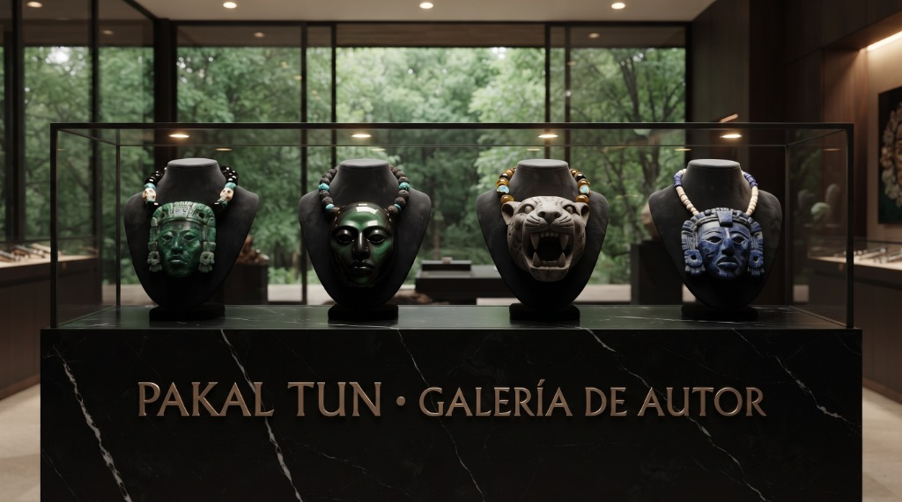
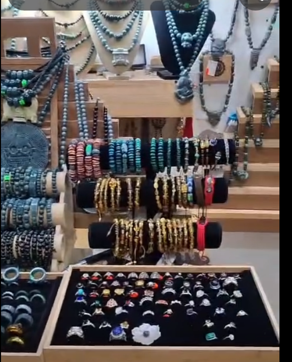
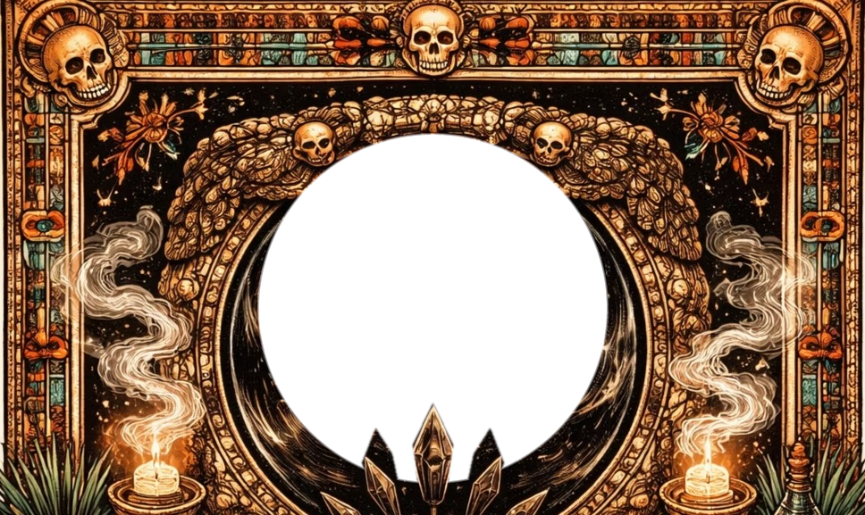

ARTE ANCESTRAL EN JADE, TURQUESA & OBSIDIANA
Pectorales monumentales, collares ceremoniales con máscaras de Pakal y brazaletes tallados a mano con minerales auténticos por el maestro Yax Balam en su taller y galería oficial.
PAKAL TUN: Maestría Lapidaria Prehispánica
PAKAL TUN nace como un homenaje vivo a las culturas originarias de Mesoamérica. Cada collar, pectoral y brazalete es tallado y engarzado a mano por el maestro Yax Balam con jade genuino de Guatemala y México, obsidiana, turquesa y ámbar.
TALLA DE AUTOR
Escultura lapidaria manual: máscaras ceremoniales de Pakal, rostros solares y felinos con acabados de alta fidelidad.
SIMBOLISMO
Iconografía inspirada en las cosmovisiones maya, tolteca y mexica.
PIEZAS ÚNICAS
Obras de edición limitada y de autor para coleccionistas, ceremonias o porte distinguido.
Piezas de Autor & Encargos
Diseños a medida, restauración lapidaria y selección personalizada de minerales sagrados en nuestro taller sagrado en la Zona Oculta Maya.
 Diseño a Medida
Diseño a Medida
Collar Ceremonial a Medida
Creamos tu collar de autor seleccionando el mineral de afinidad (jade, obsidiana, turquesa), deidad protectora y calibre de cuentas para tu estatura y porte.

Piezas de VitrinaPectorales & Máscaras de Galería
Piezas escultóricas montadas sobre peanas o preparadas para porte ceremonial. Obras de alta complejidad en mosaico de jadeíta, lapislázuli y obsidiana.

Artesanía LapidariaSartales, Anillos & Minerales
Ajuste de medidas en muñeca, combinación personalizada de piedras (turquesa, jade, coral, ámbar) y anillos esculpidos en una sola pieza de mineral.
Taller del Maestro Yax Balam · Zona Oculta Maya
Zona Oculta Maya · Santuario Lapidario. Talla lapidaria en vivo, selección directa de jade genuino y encargos ceremoniales personalizados.
Collares & Joyería Prehispánica
Obras de arte lapidario elaboradas a mano con jade auténtico, turquesa, obsidiana y minerales tradicionales. Piezas de colección para llevar contigo.
El Espejo de Obsidiana
El oráculo tolteca de Tezcatlipoca: un portal de transmutación y autoconocimiento. Contempla el vórtice negro, formula una pregunta desde el corazón y deja que las partículas revelen la respuesta sagrada.

Interroga al Espejo
La obsidiana no muestra lo que deseas ver, sino lo que tu espíritu necesita transformar. Formula tu duda en silencio o elígela abajo.
CRÓNICAS DEL TALLER
Artículos sobre la lapidaria mesoamericana, el significado de las piedras y el cuidado de tus piezas de jade.
Taller & Galería del Maestro Yax Balam
PAKAL TUN es la galería y taller del maestro lapidario Yax Balam, donde nacen piezas prehispánicas de autor talladas a mano en jadeíta auténtica, turquesa y obsidiana.
El taller sagrado se ubica en la Zona Oculta Maya. Aquí cobran vida collares ceremoniales, pectorales monumentales, calaveras talladas y efigies sagradas de Pakal y del jaguar.
Cada pieza es única: las vetas naturales del mineral dictan la forma y la maestría del maestro Yax Balam completa la obra con devoción.
Maestro Yax Balam
Maestro Artesano Lapidario
Talla en roca de jadeíta (Guatemala y México), obsidiana y turquesa. Esculpe pectorales monumentales, mosaicos de Pakal y efigies sagradas.
El Taller Sagrado
Zona Oculta Maya · Taller de Autor
Zona Oculta Maya · Taller y galería sagrada del Maestro Yax Balam: escultura lapidaria en vivo, piezas de autor en exhibición y encargos ceremoniales a medida.
La piedra guarda la memoria
Creemos que el jade guarda la memoria de quienes lo tallaron antes.
Que cada veta cuenta una historia irrepetible.
Que la artesanía se hace despacio y con las manos.
Que la herencia mesoamericana merece seguir viva.
Que una joya puede ser también un escudo.
Cada pieza PAKAL TUN es una obra única.
Llévala contigo.
¿Deseas una pieza de autor personalizada?
Te asesoramos sobre disponibilidad de minerales, medidas de collares, pedidos especiales o contacto con el taller sagrado del Maestro Yax Balam en la Zona Oculta Maya.
Comunidad & Taller de Autor
Síguenos en Facebook para ver las piezas más recientes o conectar con el taller en la Zona Oculta Maya.